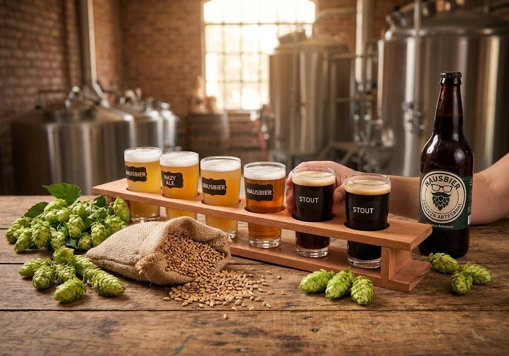
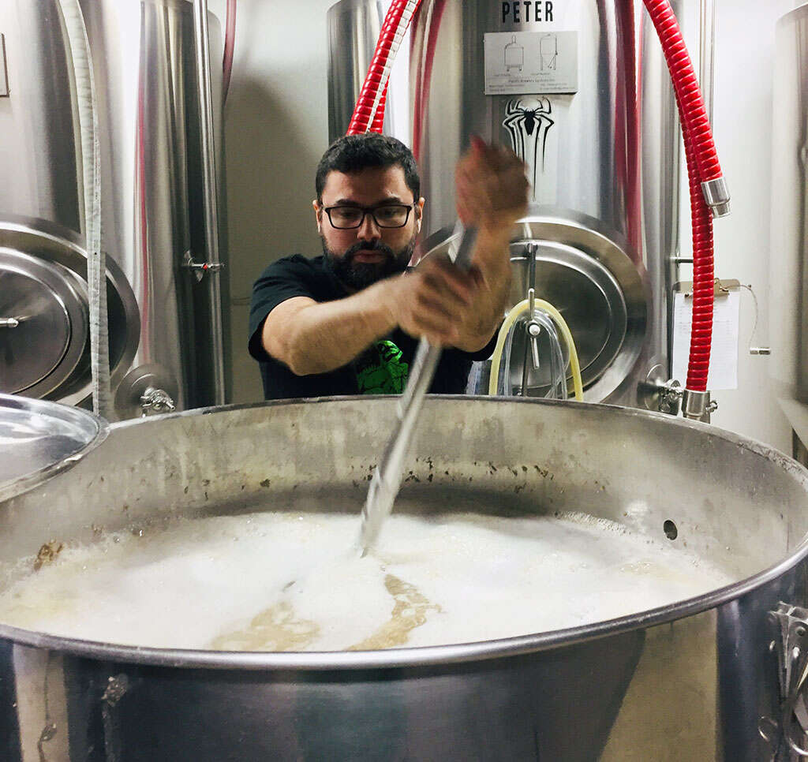
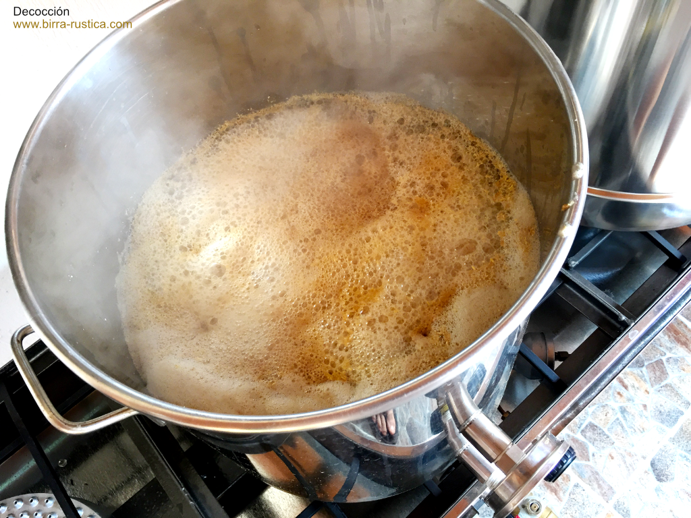
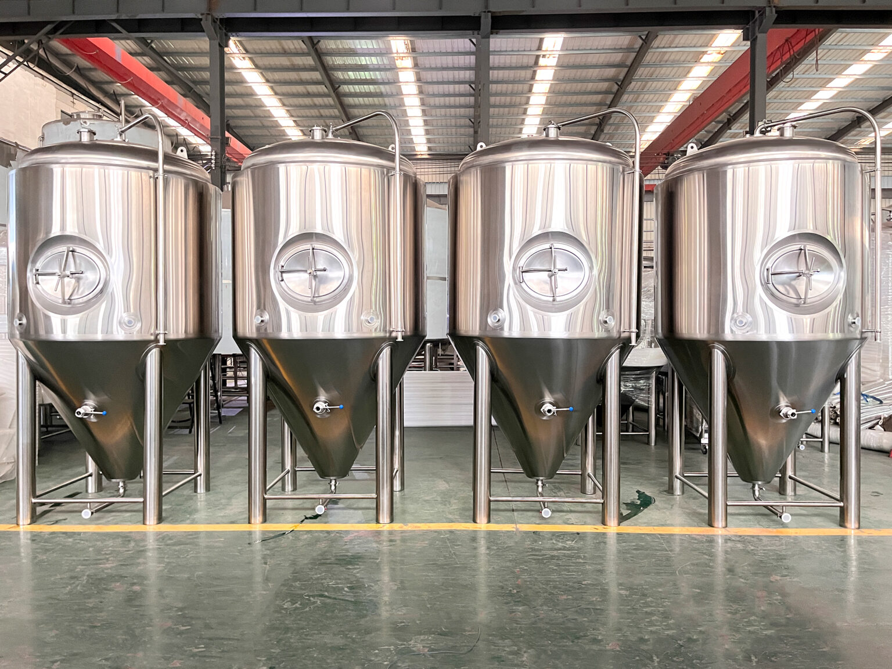
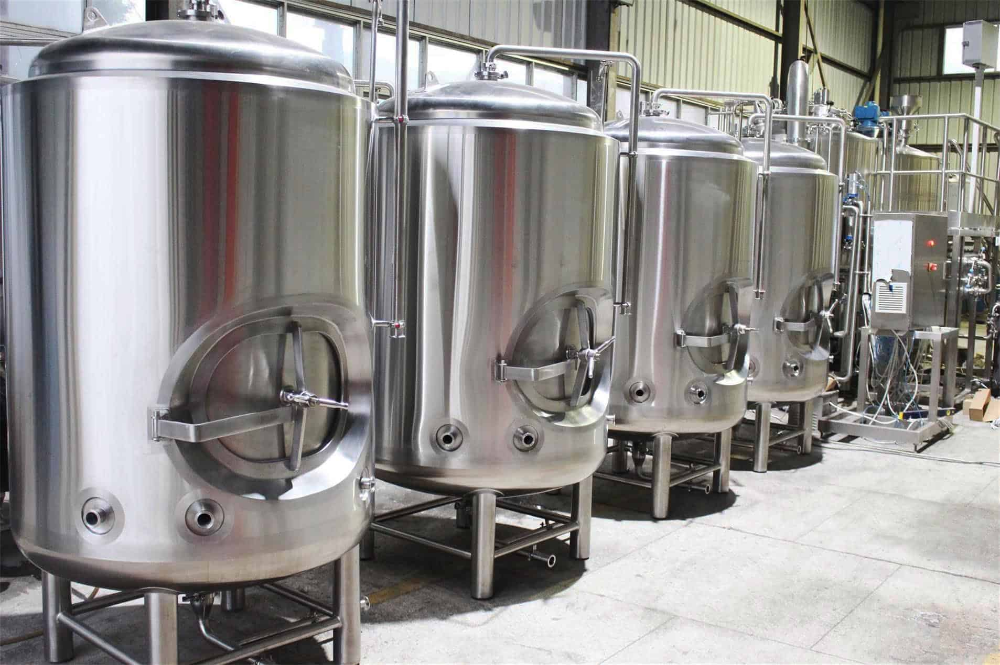
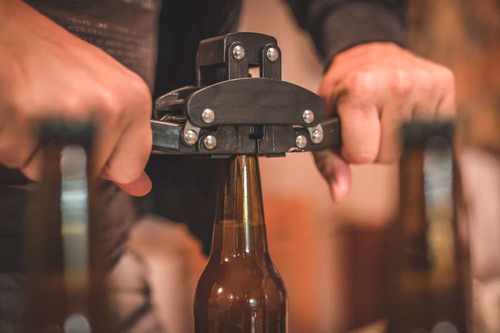

Bienvenidos a HAUSBIER
Cerveza artesanal con carácter,
hecha para quienes disfrutan
de los buenos momentos

La magia de nuestro proceso
La elaboración de cerveza artesanal comienza con la selección de los ingredientes principales: agua, malta de cebada, lúpulo y levadura.
-
1

Maceracion: se mezcla la malta con agua caliente para extraer los azucares necesarios.
-
2

Cocción: el líquido obtenido, llamado mosto, se hierve y se agrega el lúpulo, que aporta sabor, aroma y amargor.
-
3

Fermentación: se enfría el mosto y se incorpora la levadura, que transforma los azúcares en alcohol y dióxido de carbono.
-
4

Maduración: la cerveza permanece un tiempo en reposo para desarrollar mejor sus sabores y aromas.
-
5

Envasado: finalmente, la cerveza se filtra o acondiciona según el estilo y se coloca en botellas, latas o barriles.